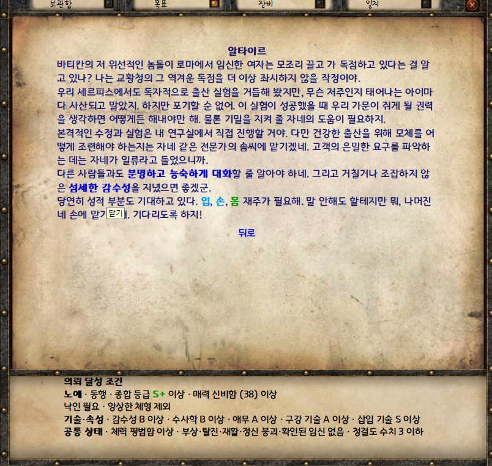

잭 오 나인 테일즈 v2.4.1 · 3차 누적 패치
이지 모드에서는 고객이 원하는 노예의 조건을 미리 확인할 수 있습니다. 경매에서는 입찰이 이어질 때 대사가 달라지고, 조수에게 특별요리를 맡기면 식사 품질을 한 단계 높일 수 있습니다.
기존 2.4.1 본편용입니다. 이전 패치와 WORKSHOP 복구본을 포함합니다. 아래는 2차 r4 이후의 변경입니다.
개선·변경
초보자를 위한 의뢰 안내
이지 모드에서 목표 → 고객들의 특별한 요구를 열고 의뢰를 선택하면, 화면 하단에 공급할 노예의 등급·기술·특성 등 필요한 조건이 표시됩니다. 누구를 데려갈지, 어떤 훈련을 더 해야 할지 미리 확인할 수 있습니다.

입찰이 오갈 때 달라지는 경매 대사
같은 입찰자가 값을 올릴 때마다 같은 말을 반복해 경매가 단조로웠습니다. 이제 길드 판매 경매에서는 같은 입찰자가 다시 응찰해도 대사가 달라집니다. 출품을 맡기는 순간부터 낙찰을 알리는 순간까지 진행 대사도 손봅니다.
시장 구매 경매에서는 잡파가 새 매물을 소개하고 입찰과 낙찰에 맞춰 반응합니다. 경매 밖에서 잡파와 직접 거래하거나 판매를 맡길 때도 제안과 대금 지급에 맞는 대사를 볼 수 있습니다.
콘텐츠 및 밸런스
- 아그라바의 신선한 과일과 와인을 여러 끼에 쓸 수 있는 묶음으로 판매합니다. 과일은 금화가 부족할 때 스파크로도 살 수 있습니다.
- 워커홀릭과 무기력함은 일·교육·휴식에 서로 다른 영향을 줍니다. 기존 세이브의 구형 특성도 새 규칙에 맞춰 정리합니다.
- 팔방미인은 다재다능을 대체하는 상위 특성입니다. 길드 경매에도 두 특성을 반영해 폭넓은 훈련의 성과가 판매가에 드러나도록 합니다.
- 신규 무작위 인물에게 노예근성이 나타날 확률을 낮춥니다. 기존 보유자의 특성은 유지합니다.
- 바이커 의뢰에서 의뢰인의 선호를 보상에 반영합니다.
편의성 및 UI
- 고객들의 특별한 요구에서 의뢰가 많아지면 목록을 넘겨 볼 수 있습니다.
- 조수의 식재료 받아오기에 자동 구매 품목을 모으고, 육류 이름을 다진고기와 보통 살코기로 정리합니다.
- 도시 도서관에 주제별 서가와 전용 아이콘을 추가합니다. 시장 경매에도 현재 페이지 넘김 버튼을 사용합니다.
그래픽
- 펠라게야의 알몸·비서·하녀·도미나 외형을 모두 갖춥니다.
- 빌헬미네의 전신과 초상을 갱신하고, 파브리카 장면에 대체 컷을 추가합니다.
신규
- 조수에게 특별요리 명령을 내릴 수 있습니다. 신선한 과일이나 아그라바 와인 같은 특수 식재료를 사용해 평소보다 식사 품질을 한 단계 높입니다.
- 시루가 전용 등장 경로와 과거 이야기를 갖춘 신규 뱀파이어로 등장합니다. 알몸·비서·하녀·도미나 외형을 모두 사용할 수 있습니다.
- 도시 도서관에 공개 열람 자료를 추가합니다.
- 색정광의 상위 단계로 정액 중독을, 불감증의 상위 단계로 석녀를 추가합니다.
버그 수정
- 기존 세이브에서 시루의 시작 특성이 빠졌다면 불러올 때 정액 중독을 적용하고 특성 목록에 표시합니다. 카오틱 에센스로 치료한 기록은 유지합니다.
- 페넬로페와 두막 등 일부 고객의 의뢰가 목표에 표시되지 않던 문제를 수정합니다.
- 호손 알리만의 라나 납품이 조건을 충족해도 인정되지 않거나 재시도할 수 없던 문제를 수정합니다.
- 페넬로페와 대화할 때 일부 대사가 영어로 표시되던 문제를 수정합니다.
알려진 문제
이전 세이브에서 페넬로페에게 이미 문의했다면 의뢰가 자동으로 등록되지 않을 수 있습니다. 다시 묻거나 거래를 제안하면 목표에 표시됩니다.